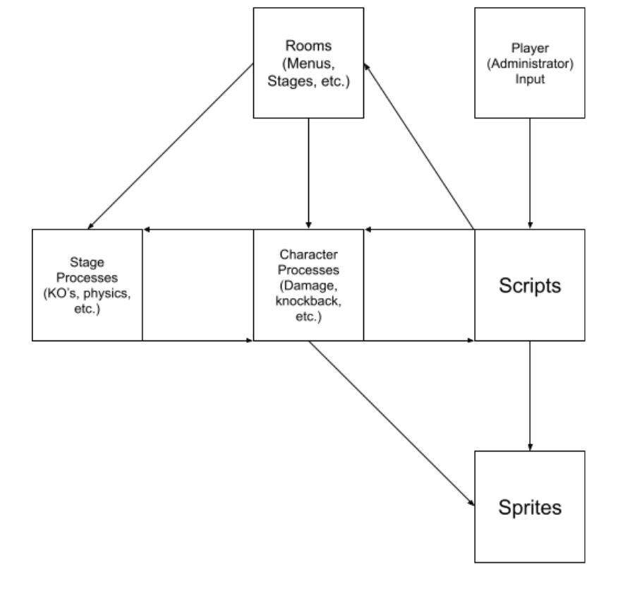

FrostFyte works by tying all processes to a single stockpile of
scripts.
These scripts are influenced by player input (
administrator), and allow players to engage with what Game Maker Engine calls
rooms, which refers to both stages and menus.
These menus impact
stage and character processes, including character & stage selection.
Both stages and characters fall back into the script stockpile, which impacts things like
damage, knockback, knockouts, and general physics when influenced by player inputs.
The scripts and character processes also draw on the
sprite stockpile, which refers to all of FrostFyte’s original assets used during gameplay, including stage art, character art, and animations.
The full Repository Architecture diagram for FrostFyte
Classes in Platform Fighter Engine play a large role, in that they’re integral to the scripts that provide characters with their functions. Fighters function as classes, and within their declarations, they’re given a number of stats determining things like movement speed on the ground and in the air.
In addition, these “classes” have access to a number of other scripts, assigning properties and animations to moves. These classes are not singleton, as they’re called in a variety of functions necessary for character selection.